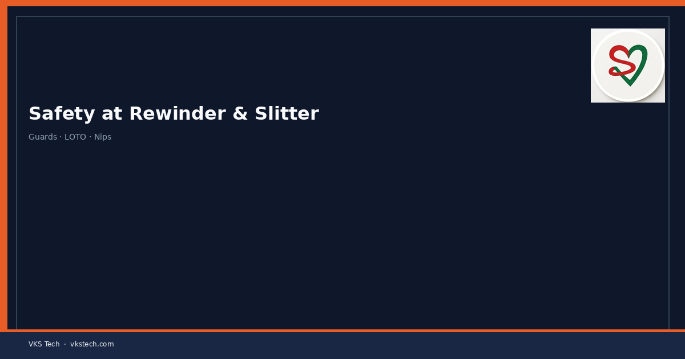
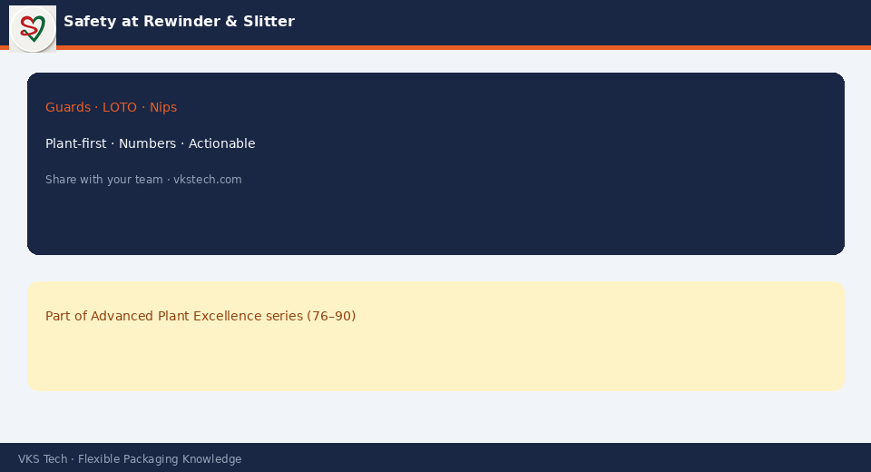

🛡️ Most Serious Injuries in Converting Cluster Around Rewinds, Slitters and Manual Core Handling — Not Around “Complex Chemistry”.
📖 9-min read · Safety · Supervisors
Guards, lockout for blade changes, two-person rule for heavy rolls, and never reaching into a running nip. Speed culture must not override isolation procedures.
📌 Non-Negotiables
- Guards in place before run
- LOTO for knife/blade work
- No hand in nip — ever
- Team lift / aids for heavy cores and rolls

💡 Culture: Any stop for a missing guard is a successful stop.
🛡️ गंभीर चोटें अक्सर रीवाइंड, स्लिटर और कोर हैंडलिंग के आसपास होती हैं।
📖 9-मिनट पढ़ें
💡 संस्कृति: गार्ड न होने पर रुकना सफल रुकना है।